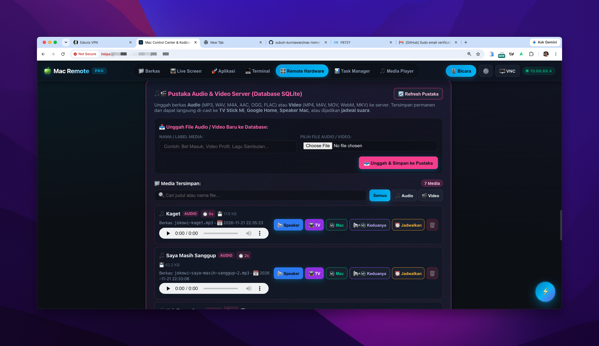
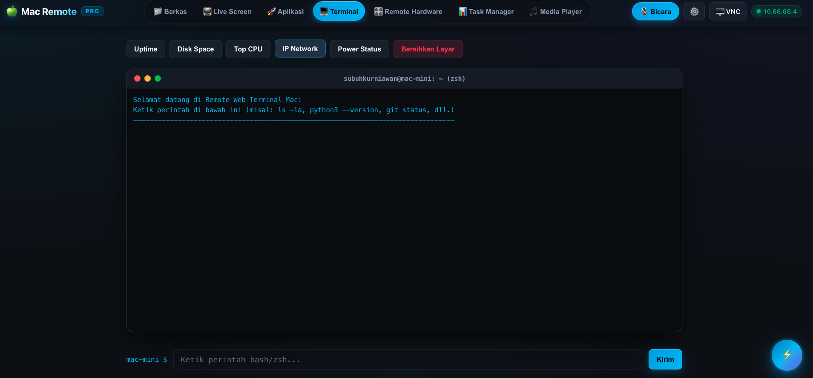

Tangkapan Layar & Visual Interaktif
Klik pada gambar untuk memperbesar tangkapan layar antarmuka dashboard Web PWA.

1. 📁 File Manager (Kodbox-Style)
Navigasi file cepat, upload berkas, dan streaming video 206 langsung dari Mac.

2. 📢📺 Cast Center & Google Assistant Hub
Penyiaran ke Google Home & TV Stick Mi serta input perintah Google Assistant API.

3. 🎛️ Live Audio Monitor & Stop Instan
Pemantauan status pemutaran real-time, volume slider, dan tombol darurat Stop All.

4. 🎵🎬 Pustaka Audio & Video (SQLite)
Koleksi musik & video server dengan 1-klik cast ke TV Stick Mi dan Google Home.

5. ⏰ Jadwal Suara Cerdas (Cast & Say)
Jadwal pengumuman suara otomatis berbasis tanggal, jam, atau countdown durasi.

6. 📊 Task Manager & Monitor Mac
Pemantauan CPU, RAM, disk space, serta kontrol kill aplikasi yang sedang aktif.

7. ⚡ Skenario 1-Klik & Clipboard Sync
Otomatisasi makro (Mode Malam/Kerja) dan sinkronisasi papan klip dua arah.

8. 💻 Web Terminal Mac mini
Eksekusi perintah terminal zsh secara aman dan langsung dari web browser.

9. 🚀 Peluncur Aplikasi & Pembuka URL
Buka Chrome, Safari, VS Code, atau website tertentu di Mac dengan 1 sentuhan.

10. 📺 Live Screen Sharing & VNC
Pantau visual layar fisik Mac mini atau kendalikan via VNC Apple Screen Sharing.